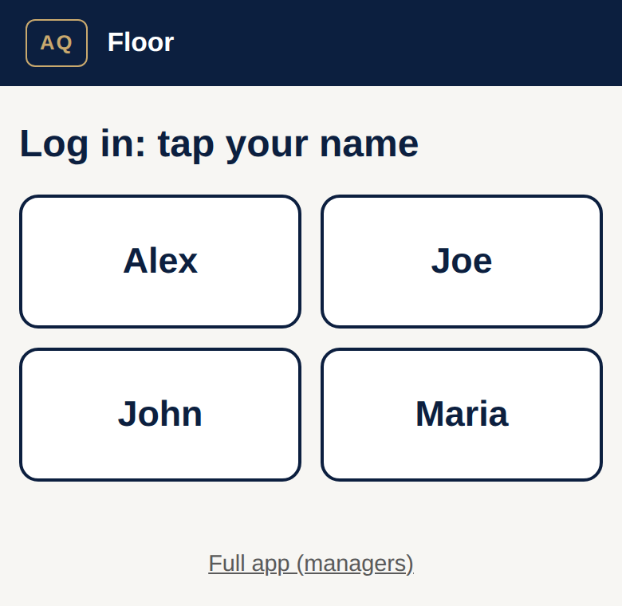
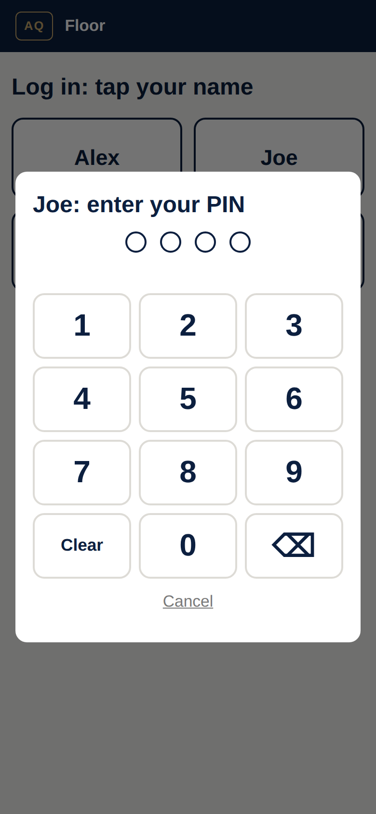
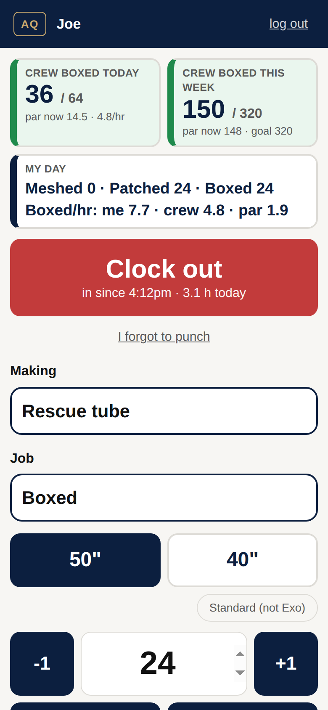
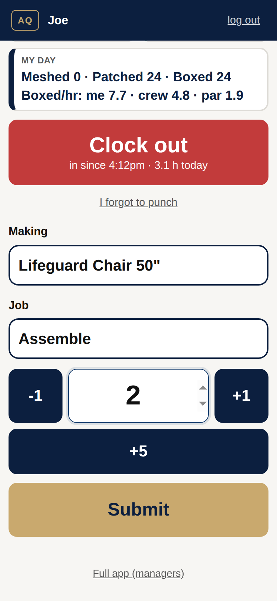

One screen: Floor mode. Log in once, clock in, log what you finish, clock out. That is the whole app for the crew.
Open Floor modeThe app is a web page. Put it on your home screen once and it opens like any other app, and it keeps working when the shop Wi-Fi drops.
Open prod-through-inv-3.dan-daf.workers.dev in your phone's browser.
Safari on iPhone, Chrome on Android. It opens Floor mode on its own.
iPhone: tap the Share button, then Add to Home Screen.
Android: tap the ⋮ menu, then Add to Home screen.
Open it from the home screen from now on.
It updates itself. If it ever says the site can't be reached or looks stale, close it and open it again.

Tap your name.
Only your own. Everything you log and every punch goes under it.
Type your 4-digit PIN.
A manager sets it. No PIN yet? The app says "Ask a manager to set your PIN." Five wrong tries lock you out for 15 minutes.
That's it until you log out.
The phone remembers you. Sharing a phone? Tap log out at the top right when you're done so the next person logs in as themselves.

Tap the big green Clock in button when you start. It turns red and says Clock out while you're on.
Both ask for your PIN.
The clock only works at the shop, so the phone asks for your location. Say yes, and keep location on.
You'll see "Clocked in 7:02am at shop ✓". If it says to turn on location, do that and try again.
Tap Clock out when you leave.
Forgot? Anyone still clocked in at 6pm is clocked out at 6pm automatically.
Missed a punch, or worked past 6pm? Tap I forgot to punch.
Pick in or out, today or yesterday, the time and a reason, and enter your PIN. A manager approves it. Nothing changes until they do, and only managers can change times.

Making: what you're working on.
Rescue tube for tubes and straps. Otherwise pick the chair, foam shape or kickboard by name. The phone remembers your last pick.
Job: the station you finished.
Tubes: Cut, Glued, Meshed, Patched, Paint 1, Paint 2, Printed, Straps Attached, Boxed, or Strap made. Chairs: Cut, Assemble, Box. Shapes: CNC, Clean, Box.
Tubes only: pick 50" or 40".
The small Standard (not Exo) button is for tubes without mesh. Leave it off for Exo. Cut and Glued go on the blank, and Strap made has no size; the app handles both.
Count it up: +1, +5, +12 box (tubes only), -1 if you went too far, or type the number.
Tap Submit. The bar at the bottom says what was logged.

Tapped the wrong thing? Hit Undo on the bar at the bottom. It's there for two minutes after each Submit and takes back exactly that entry, materials included. It doesn't touch clock punches.
Noticed later? Tell Alex or John. They can reverse any entry. Don't log a negative number or "make up for it" tomorrow.
Only log what you did, logged in as you. Log out on a shared phone.
Don't share it. Every punch and log-in uses it.
Count a piece at a station when it's done there.
Each station gets its own number, even if the same pieces go through all of them.
Two minutes on the bottom bar. After that, ask a manager.
You're clocked out at 6pm. Worked later? "I forgot to punch".
Questions or something looks wrong: tell Alex or John.